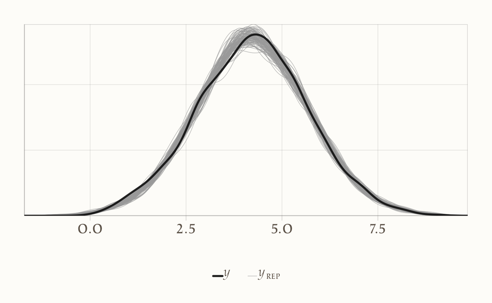
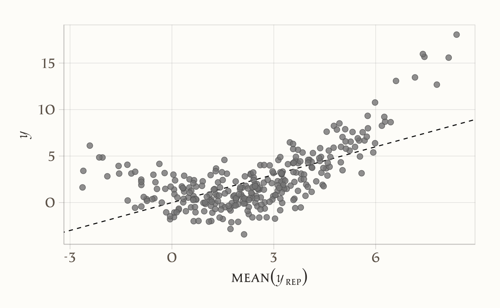

here::here("code", "_common.R") |>
source()
# Load packages
if (!requireNamespace("pacman")) install.packages("pacman")
pacman::p_load(brms, posterior, cmdstanr, tidybayes, loo, patchwork)29 Regressione lineare in Stan
Introduzione
Nei capitoli precedenti abbiamo formulato la regressione lineare bivariata sia in chiave frequentista sia in chiave bayesiana, lavorando con modelli semplici e utilizzando notazioni compatte per facilitarne l’implementazione in R. Questi esercizi ci hanno permesso di cogliere la logica dell’approccio bayesiano, ma hanno anche mostrato i limiti delle soluzioni analitiche: sono praticabili solo in casi elementari e non si estendono facilmente a modelli con più predittori, variabili categoriali o strutture gerarchiche.
Per affrontare problemi realistici è necessario un linguaggio che ci permetta di specificare modelli generali e di stimarli in modo efficiente con algoritmi di campionamento moderni. Questo linguaggio è Stan. Con Stan possiamo tradurre direttamente le nostre ipotesi in codice, lasciando al software il compito di eseguire il campionamento dalla distribuzione a posteriori.
In questo capitolo vedremo come implementare il modello di regressione lineare in Stan. Partiremo dalla traduzione della formulazione matematica in codice, per poi esaminare come i diversi blocchi del linguaggio (data, parameters, model, generated quantities) contribuiscano a definire e stimare il modello. Lo scopo non è solo imparare a scrivere un programma funzionante, ma soprattutto comprendere il legame stretto tra teoria statistica, specificazione del modello e calcolo computazionale.
29.0.1 Perché usare Stan per la regressione?
Scrivere la regressione in Stan significa specificare un modello generativo completo:
\[ y_n \sim \mathcal{N}(\alpha + \mathbf{x}_n^\top \boldsymbol{\beta},\, \sigma), \] con priors espliciti per \(\alpha\), \(\boldsymbol{\beta}\) e \(\sigma\). Questo approccio offre tre vantaggi immediati:
- Trasparenza — la struttura del modello (likelihood e priors) è dichiarata in modo chiaro.
- Coerenza — l’inferenza è interamente bayesiana: non ci sono p-value né “soglie di significatività”.
- Flessibilità — lo stesso schema si estende facilmente a GLM (esiti Bernoulli, Poisson, ecc.) e a modelli multilivello, semplicemente cambiando la famiglia di distribuzione o la struttura gerarchica.
29.0.2 Idee guida del capitolo
-
Notazione matriciale: la scrittura compatta \(\mathbf{y} = \mathbf{X}\boldsymbol{\beta} + \boldsymbol{\varepsilon}\) si traduce in Stan in
matrix[N,K] X;evector[K] beta;, con previsioni calcolate comeX * beta. -
Vettorializzazione: scrivere
y ~ normal(X * beta + alpha, sigma);è più elegante ed efficiente che iterare su ogni osservazione. - Coefficiente parziale vs bivariato: in presenza di correlazione tra predittori, il coefficiente bivariato può risultare distorto o addirittura invertire segno. I coefficienti del modello multiplo misurano invece l’associazione condizionata.
- Priors su scala naturale: formulare i priors nelle unità originali (per esempio, punteggi da 0 a 10 o da 0 a 100) rende le ipotesi più interpretabili e comunicabili.
29.0.3 Una prima finestra sugli errori di specificazione
Il capitolo affronterà anche alcuni casi frequenti di specificazione errata, con esempi concreti tratti dalla ricerca psicologica:
- Variabili omesse: trascurare un predittore rilevante e correlato introduce bias nei coefficienti.
- Forma funzionale errata: trattare relazioni non lineari come lineari semplici produce stime ingannevoli.
- Varianza non costante e outlier: assumere residui gaussiani omoschedastici può essere inadeguato; i posterior predictive checks aiutano a diagnosticarlo e a considerare likelihood più robuste.
In sintesi, la regressione lineare in Stan non è solo un esercizio di calcolo, ma un’occasione per apprendere un metodo: partire da un modello teorico, tradurlo in linguaggio probabilistico, implementarlo in codice, e valutarne la capacità di rappresentare i dati psicologici in modo critico e trasparente.
Panoramica del capitolo
- Il modello di regressione multipla in notazione matriciale.
- Formulazione del modello in codice Stan.
- Stima e interpretazione dei coefficienti parziali e confronto con quelli di modelli bivariati.
- Effetto della correlazione tra predittori sulle stime e errore di specificazione.
29.1 Regressione lineare con un solo predittore
Consideriamo una regressione lineare con un solo predittore, un’intercetta \(\alpha\), un coefficiente \(\beta\) e un errore gaussiano \(\sigma\):
\[ y_n = \alpha + \beta\,x_n + \varepsilon_n,\qquad \varepsilon_n \sim \mathcal{N}(0,\sigma). \]
In Stan con priors espliciti e debolmente informativi:
data {
int<lower=1> N;
vector[N] x; // predittore (consigliato centrare in R)
vector[N] y; // risposta continua
}
parameters {
real alpha; // intercetta (valore di y al centro di x)
real beta; // coefficiente
real<lower=0> sigma; // DS dell'errore
}
model {
// Priors debolmente informativi (propri)
alpha ~ normal(0, 10);
beta ~ normal(0, 5);
sigma ~ student_t(4, 0, 10); // half-Student-t implicita grazie al vincolo <lower=0>
// Likelihood (vettorializzata)
y ~ normal(alpha + beta * x, sigma);
}
generated quantities {
vector[N] mu = alpha + beta * x;
vector[N] y_rep;
for (n in 1:N) y_rep[n] = normal_rng(mu[n], sigma);
// R^2 "bayesiano" (Gelman et al.)
real R2 = variance(mu) / (variance(mu) + square(sigma));
}In questo modello:
- N è il numero di osservazioni;
- per ogni osservazione abbiamo un valore di x (predittore) e un valore di y (variabile risposta);
-
alpha ~ normal(0, 10)ebeta ~ normal(0, 5)sono priors propri, debolmente informativi sulla scala della variabile y; -
sigma ~ student_t(4, 0, 10)è una half-Student-t implicita (perchésigmaè vincolata \(>0\)); è un prior robusto e poco informativo sulla scala di \(\sigma\).
Se venissero rimosse tutte le righe di prior, Stan non aggiungerebbe priors di default:
-
alphaebetaavrebbero di fatto un prior piatto improprio su \((-\infty, +\infty)\); -
sigmaavrebbe un prior piatto improprio su \((0, +\infty)\).
Con likelihood gaussiane questi priors possono talvolta produrre una posteriore propria, ma non è una buona pratica: meglio usare priors (anche deboli) e fare prior predictive checks.
29.1.1 Notazione matriciale e vettorializzazione
La riga seguente è vettorializzata, cioè calcola la probabilità di tutte le osservazioni in un’unica istruzione:
y ~ normal(alpha + beta * x, sigma);È equivalente a scrivere:
for (n in 1:N) {
y[n] ~ normal(alpha + beta * x[n], sigma);
}La forma vettorializzata è più compatta e molto più veloce da eseguire. In Stan, quando un argomento di una distribuzione è un vettore, anche gli altri argomenti possono esserlo (purché abbiano la stessa dimensione) oppure possono essere scalari (in tal caso vengono “riciclati” per tutte le osservazioni).
29.2 Notazione matriciale: regressione multipla
Ora estendiamo il ragionamento al caso in cui i predittori siano più di uno, così da introdurre il concetto di effetto parziale.
Quando abbiamo più predittori per ciascuna osservazione, possiamo scrivere il modello di regressione in forma vettoriale/matriciale (Caudek & Luccio, 2001). Con più predittori per osservazione, in forma compatta il modello è:
\[ \mathbf{y} = \mathbf{X} \, \boldsymbol{\beta} + \boldsymbol{\varepsilon} \] dove:
- \(\mathbf{y}\) è un vettore colonna di dimensione \(N \times 1\), che contiene la variabile risposta per le \(N\) osservazioni;
- \(\mathbf{X}\) è una matrice \(N \times K\), dove ogni riga corrisponde a un’osservazione e ogni colonna a un predittore (la prima colonna, se presente, è di 1 e serve per l’intercetta);
- \(\boldsymbol{\beta}\) è un vettore colonna di dimensione \(K \times 1\), che contiene i coefficienti del modello (inclusa l’intercetta se la colonna di 1 è presente in \(\mathbf{X}\));
- \(\boldsymbol{\varepsilon}\) è un vettore \(N \times 1\) di errori casuali, che assumiamo distribuiti come \(\mathcal{N}(0, \sigma^2)\).
| Notazione matematica | Significato | Oggetto in Stan | Dichiarazione Stan |
|---|---|---|---|
| \(\mathbf{y}\) | Vettore colonna degli esiti (variabile risposta) | y |
vector[N] y; |
| \(\mathbf{X}\) | Matrice dei predittori (N osservazioni × K predittori) | x |
matrix[N, K] x; |
| \(\boldsymbol{\beta}\) | Vettore colonna dei coefficienti di regressione | beta |
vector[K] beta; |
| \(\beta_0\) | Intercetta | alpha |
real alpha; |
| \(\sigma\) | Deviazione standard dell’errore | sigma |
real<lower=0> sigma; |
| \(\hat{\mathbf{y}} = \mathbf{X} \boldsymbol{\beta} + \beta_0\) | Vettore delle predizioni lineari | x * beta + alpha |
Espressione all’interno del modello Stan |
| \(\boldsymbol{\varepsilon}\) | Vettore degli errori casuali | — | Implicito nella distribuzione normal(..., sigma)
|
29.2.1 Sviluppo riga per riga
Scrivendo esplicitamente il contenuto della moltiplicazione \(\boldsymbol{X} \, \boldsymbol{\beta}\), otteniamo:
\[ \begin{bmatrix} y_{1} \\ y_{2} \\ \vdots \\ y_{N} \end{bmatrix} = \begin{bmatrix} 1 & x_{11} & x_{12} & \dots & x_{1,K-1} \\ 1 & x_{21} & x_{22} & \dots & x_{2,K-1} \\ \vdots & \vdots & \vdots & \ddots & \vdots \\ 1 & x_{N1} & x_{N2} & \dots & x_{N,K-1} \end{bmatrix} \begin{bmatrix} \beta_{0} \\ \beta_{1} \\ \beta_{2} \\ \vdots \\ \beta_{K-1} \end{bmatrix} + \begin{bmatrix} \varepsilon_{1} \\ \varepsilon_{2} \\ \vdots \\ \varepsilon_{N} \end{bmatrix} \]
29.2.2 Interpretazione
- Ogni riga della matrice \(\mathbf{X}\) contiene i valori dei predittori per una singola osservazione.
- La stessa colonna di \(\boldsymbol{\beta}\) (cioè lo stesso coefficiente) si applica a tutte le righe, moltiplicando il rispettivo valore del predittore.
- Il termine \(\beta_0\) è l’intercetta: è costante e si applica a tutte le osservazioni.
- La moltiplicazione \(\mathbf{X} \, \boldsymbol{\beta}\) produce un vettore \(N \times 1\) di valori previsti (\(\hat{y}\)), uno per ogni osservazione.
- Gli errori \(\boldsymbol{\varepsilon}\) rappresentano la differenza tra il valore osservato \(y_i\) e il valore previsto \(\hat{y}_i\).
29.2.3 Esempio con due variabili indipendenti
Se \(N=3\) e \(K=3\) (intercetta + 2 predittori), abbiamo:
\[ \underbrace{\begin{bmatrix} y_{1} \\ y_{2} \\ y_{3} \end{bmatrix}}_{y} = \underbrace{\begin{bmatrix} 1 & x_{11} & x_{12} \\ 1 & x_{21} & x_{22} \\ 1 & x_{31} & x_{32} \end{bmatrix}}_{X} \underbrace{\begin{bmatrix} \beta_{0} \\ \beta_{1} \\ \beta_{2} \end{bmatrix}}_{\beta} + \underbrace{\begin{bmatrix} \varepsilon_{1} \\ \varepsilon_{2} \\ \varepsilon_{3} \end{bmatrix}}_{\varepsilon} \] Il che equivale a:
\[ \begin{cases} y_{1} = \beta_0 + \beta_1 x_{11} + \beta_2 x_{12} + \varepsilon_{1} \\ y_{2} = \beta_0 + \beta_1 x_{21} + \beta_2 x_{22} + \varepsilon_{2} \\ y_{3} = \beta_0 + \beta_1 x_{31} + \beta_2 x_{32} + \varepsilon_{3} \end{cases} \]
29.2.4 Interpretazione dei coefficienti parziali di regressione
In un modello di regressione multipla ogni coefficiente \(\beta_j\) rappresenta l’effetto parziale del predittore \(x_j\) sulla variabile risposta \(y\), tenendo costanti (cioè controllando per) gli altri predittori inclusi nel modello.
- Effetto parziale: \(\beta_j\) indica di quanto ci si attende che cambi \(y\) in media se \(x_j\) aumenta di una unità, mentre tutti gli altri predittori del modello restano invariati.
- Unità di misura: l’interpretazione è sempre nella scala originale di \(y\) e \(x_j\) (se non abbiamo standardizzato).
- Segno: positivo se, a parità degli altri predittori, un aumento di \(x_j\) è associato a un aumento di \(y\); negativo se associato a una diminuzione.
29.2.4.1 Differenza con la regressione bivariata
Se stimiamo un modello bivariato (cioè con un solo predittore per volta), il coefficiente di regressione di \(x_j\) rappresenta l’associazione totale tra \(x_j\) e \(y\), senza tenere conto di altri fattori. Questo può essere fuorviante quando i predittori sono correlati tra loro e/o esiste un predittore \(x_k\) che spiega parte della stessa varianza di \(y\) che spiega \(x_j\).
In questi casi:
- Modello bivariato: il coefficiente di \(x_j\) include anche l’effetto “indiretto” dovuto alla sua correlazione con altri predittori.
- Modello multiplo: il coefficiente di \(x_j\) è “depurato” dagli effetti degli altri predittori, cioè riflette l’associazione residua unica di \(x_j\) con \(y\).
29.3 Esempio numerico
Per chiarire concretamente la differenza tra l’effetto totale (o grezzo) di un predittore e il suo effetto parziale (o netto), simuliamo uno scenario realistico ipotizzando che l’esito \(y\) sia un punteggio di stress su scala 0–10. I due predittori sono:
- \(x_1\): affetto negativo istantaneo su scala 0–10 (più alto = più negativo);
- \(x_2\): ore di sonno nell’ultima notte su scala 0–10.
Supponiamo che:
- a parità di altre condizioni, aumentare l’affetto negativo di 1 punto (su 0–10) faccia crescere lo stress di qualche punto (effetto positivo);
- dormire di più riduca lo stress (effetto negativo);
- il livello medio di stress a affetto negativo medio e sonno medio sia moderato.
set.seed(42)
N <- 2000
rho <- 0.8
x1 <- rnorm(N, 0, 1)
z <- rnorm(N, 0, 1)
x2 <- rho * x1 + sqrt(1 - rho^2) * z # cor(x1, x2) ~ 0.8
beta1_true <- 1
beta2_true <- -2
sigma_true <- 0.5
y <- beta1_true * x1 + beta2_true * x2 + rnorm(N, 0, sigma_true)
dati <- tibble(y = y + abs(min(y)), x1 = x1 + abs(min(x1)), x2 = x2 + abs(min(x2)))
summary(dati)
#> y x1 x2
#> Min. :0.00 Min. :0.00 Min. :0.00
#> 1st Qu.:3.26 1st Qu.:2.70 1st Qu.:2.73
#> Median :4.23 Median :3.36 Median :3.38
#> Mean :4.23 Mean :3.36 Mean :3.38
#> 3rd Qu.:5.21 3rd Qu.:4.03 3rd Qu.:4.06
#> Max. :9.03 Max. :6.96 Max. :6.70Se i due predittori \(x_1\) e \(x_2\) sono correlati (ad esempio: chi dorme poco tende anche a percepire più stress):
cor(dati$x1, dati$x2)
#> [1] 0.8allora i coefficienti stimati assumono significati diversi a seconda del modello:
- Nel modello bivariato \(y \sim x_1\), il coefficiente di \(x_1\) riflette non solo l’effetto diretto dello stress sull’ansia, ma anche l’effetto indiretto mediato dalla correlazione con il sonno (più stress → meno sonno → più ansia).
- Nel modello multiplo \(y \sim x_1 + x_2\), il coefficiente di \(x_1\) isola invece l’effetto unico dello stress, cioè la variazione di ansia associata a un incremento di stress a parità di ore di sonno.
In sintesi:
- i coefficienti bivariati misurano l’associazione totale tra predittore e risposta,
- i coefficienti parziali misurano l’associazione unica, controllando per gli altri predittori,
- la differenza tra i due diventa rilevante quando i predittori sono correlati.
Per rendere chiara la differenza, usiamo i dati simulati (y, x1, x2) e stimiamo i coefficienti di regressione in due modi diversi:
– usando un predittore alla volta (y ~ x1 e y ~ x2); – usando entrambi i predittori insieme (y ~ x1 + x2).
Per semplicità, iniziamo a stimare i coefficienti con lm() (poi useremo Stan):
# Modelli bivariati
fit_biv_x1 <- lm(y ~ x1, data = dati)
fit_biv_x2 <- lm(y ~ x2, data = dati)
# Modello multiplo
fit_mult <- lm(y ~ x1 + x2, data = dati)
# Confronto dei coefficienti
coefs <- data.frame(
Modello = c("Bivariato x1", "Bivariato x2", "Multiplo"),
beta_x1 = c(coef(fit_biv_x1)["x1"], NA, coef(fit_mult)["x1"]),
beta_x2 = c(NA, coef(fit_biv_x2)["x2"], coef(fit_mult)["x2"])
)
coefs
#> Modello beta_x1 beta_x2
#> 1 Bivariato x1 -0.618 NA
#> 2 Bivariato x2 NA -1.22
#> 3 Multiplo 1.017 -2.02I valori veri dei coefficienti erano:
beta1_true <- 1
beta2_true <- -2Cosa osserviamo:
- nel modello bivariato
y ~ x1, il coefficiente dix1è negativo (≈ −0.6), anche se il vero effetto è positivo (+1); - nel modello multiplo
y ~ x1 + x2, i coefficienti si avvicinano ai valori veri (≈ +1 perx1, ≈ −2 perx2): qui leggiamo gli effetti parziali, cioè ciascun predittore “a parità” dell’altro.
Il cambio di segno nel bivariato è un chiaro esempio di bias da variabile omessa: se escludiamo x2 (sonno), l’effetto stimato di x1 (affetto negativo) assorbe anche parte dell’influenza del sonno, arrivando persino a invertirne il segno.
Matematicamente, l’atteso del coefficiente bivariato è:
\[ \mathbb{E}\!\left[\hat\beta^{(biv)}_{x1}\right] \;=\; \beta_1 \;+\; \beta_2 \frac{\operatorname{Cov}(x_1, x_2)}{\operatorname{Var}(x_1)} . \]
Quando \(\beta_2\) e \(\operatorname{Cov}(x_1, x_2)\) hanno segni opposti e grande ampiezza, la correzione può superare \(\beta_1\) e invertire il segno.
29.3.1 La regressione multipla in Stan
Ora ripetiamo l’analisi precedente usando Stan. Prima però ci rinfreschiamo la memoria relativamente alle operazioni di algebra matriciale necessarie per capire il codice Stan.
Con più predittori, anche in Stan possiamo usare la notazione matriciale:
data {
int<lower=1> N;
int<lower=1> K;
matrix[N, K] X;
vector[N] y;
}
parameters {
real alpha;
vector[K] beta;
real<lower=0> sigma;
}
model {
alpha ~ normal(0, 10);
beta ~ normal(0, 5);
sigma ~ student_t(4, 0, 10);
y ~ normal(X * beta + alpha, sigma);
}
generated quantities {
vector[N] mu = alpha + X * beta;
vector[N] y_rep;
for (n in 1:N) y_rep[n] = normal_rng(mu[n], sigma);
real R2 = variance(mu) / (variance(mu) + square(sigma));
}Qui:
-
xè una matrice N × K di predittori; -
betaè un vettore con K coefficienti; -
x * betaproduce un vettore di N valori predetti; - aggiungendo
alphaotteniamo la previsione completa per ogni osservazione.
Anche in questo caso la forma vettorializzata è equivalente a:
for (n in 1:N) {
y[n] ~ normal(x[n] * beta + alpha, sigma);
}29.3.2 Intercetta come colonna della matrice dei predittori
Se preferiamo non dichiarare un parametro separato per l’intercetta (alpha), possiamo inserire una colonna di 1 come prima colonna della matrice x. In questo caso il primo elemento di beta (beta[1]) fungerà da intercetta.
Se però vogliamo assegnare un prior diverso all’intercetta rispetto agli altri coefficienti, è meglio dichiarare alpha come parametro separato. Questo è anche leggermente più efficiente, ma la differenza di velocità è trascurabile: la scelta va fatta per chiarezza del codice.
Scriviamo dunque il modello Stan per i dati dell’esempio in discussione.
stancode <- write_stan_file("
data {
int<lower=1> N;
int<lower=1> K;
matrix[N, K] X;
vector[N] y;
}
parameters {
real alpha;
vector[K] beta;
real<lower=0> sigma;
}
model {
alpha ~ normal(0, 10);
beta ~ normal(0, 5);
sigma ~ student_t(4, 0, 10);
y ~ normal(X * beta + alpha, sigma);
}
generated quantities {
vector[N] mu = alpha + X * beta;
vector[N] y_rep;
for (n in 1:N) y_rep[n] = normal_rng(mu[n], sigma);
real R2 = variance(mu) / (variance(mu) + square(sigma));
}
")Notiamo la scelta dei prior nel modello Stan:
alpha ~ normal(0, 10);
beta ~ normal(0, 5);
sigma ~ student_t(4, 0, 10);Intercetta
alpha: priornormal(0,10). È un prior debole e poco informativo: ammette con alta probabilità valori compresi tra circa −20 e +20. È adatto se i dati sono centrati (così l’intercetta rappresenta il valore medio di \(y\)). Se invece \(y\) ha una scala diversa, conviene adeguare la deviazione standard del prior alla variabilità attesa dei dati.Coefficienti
beta: priornormal(0,5). Indica che, a priori, ci aspettiamo effetti di ampiezza moderata (nell’ordine di qualche unità di \(y\) per uno scarto unitario di \(x\)), ma lasciamo aperta la possibilità a effetti anche più grandi. Se i predittori vengono standardizzati, un prior ancora più stretto comenormal(0,1)diventa naturale, perché corrisponde all’ipotesi che la maggior parte degli effetti sia inferiore a ±2 deviazioni standard di \(y\).Deviazione standard
sigma: priorstudent_t(4, 0, 10). È una distribuzione half-Student-t (positiva per vincolo<lower=0>), con code più pesanti della normale: questo rende il prior robusto, permettendo valori piccoli ma anche occasionalmente molto grandi per \(\sigma\). In pratica, evita che il modello “forzi” troppo la variabilità residua, ma previene anche valori assurdi.
Messaggio didattico: questi prior sono propri e debolmente informativi: non costringono il modello a soluzioni arbitrarie, ma al tempo stesso evitano i problemi dei prior impropri (che Stan non assegna mai di default).
In generale, conviene:
- centrare e, se possibile, standardizzare i predittori;
- scegliere prior compatibili con la scala dei dati;
- verificare le implicazioni con un prior predictive check (simulando \(y\) dai soli prior).
Compiliamo:
mod <- cmdstan_model(stancode, compile = TRUE)29.3.2.1 Un solo predittore
Iniziamo stimando il modello con un solo predittore. Costruiamo la matrice \(X\) di dimensione \(N \times 1\) (una sola colonna) e centriamo i dati per rendere l’intercetta più interpretabile:
Prepariamo i dati per Stan:
stan_data <- list(
N = nrow(dati),
K = K, # numero di predittori: 1
X = X, # matrice N×1
y = dati$y
)
glimpse(stan_data) # controllo rapido della lista
#> List of 4
#> $ N: int 2000
#> $ K: int 1
#> $ X: num [1:2000, 1] 1.387 -0.549 0.379 0.648 0.42 ...
#> $ y: num [1:2000] 3.01 4.47 5.9 6.42 4.52 ...Eseguiamo il campionamento MCMC:
fit <- mod$sample(
data = stan_data,
seed = 2025,
chains = 4,
parallel_chains = 4,
iter_warmup = 1000,
iter_sampling = 2000
)Sintesi delle stime a posteriori:
summ <- fit$summary(variables = c("alpha", "beta", "sigma", "R2"))
summ
#> # A tibble: 4 × 10
#> variable mean median sd mad q5 q95 rhat ess_bulk ess_tail
#> <chr> <dbl> <dbl> <dbl> <dbl> <dbl> <dbl> <dbl> <dbl> <dbl>
#> 1 alpha 4.233 4.234 0.030 0.030 4.184 4.282 1.001 9428.401 6239.711
#> 2 beta[1] -0.618 -0.619 0.030 0.029 -0.667 -0.570 1.003 8381.228 6196.084
#> 3 sigma 1.326 1.326 0.021 0.020 1.293 1.362 1.000 9120.684 5505.744
#> 4 R2 0.177 0.177 0.015 0.015 0.153 0.202 1.003 8432.253 5653.883Con un solo predittore, osserviamo lo stesso bias da variabile omessa che avevamo trovato con lm(): il coefficiente stimato per x1 è distorto perché il modello non tiene conto dell’influenza di x2.
29.3.2.2 Due predittori
Ora estendiamo il modello includendo entrambi i predittori. Creiamo una matrice \(X\) di dimensione \(N \times 2\), centrando entrambe le colonne:
Prepariamo i dati per Stan:
Campionamento:
fit2 <- mod$sample(
data = stan2_data,
seed = 2025,
chains = 4,
parallel_chains = 4,
iter_warmup = 1000,
iter_sampling = 2000
)Sintesi delle stime:
summ <- fit2$summary(variables = c("alpha", "beta", "sigma", "R2"))
summ
#> # A tibble: 5 × 10
#> variable mean median sd mad q5 q95 rhat ess_bulk ess_tail
#> <chr> <dbl> <dbl> <dbl> <dbl> <dbl> <dbl> <dbl> <dbl> <dbl>
#> 1 alpha 4.233 4.233 0.012 0.012 4.214 4.253 1.000 6567.012 5247.360
#> 2 beta[1] 1.016 1.017 0.019 0.019 0.986 1.047 1.001 4515.829 4602.377
#> 3 beta[2] -2.017 -2.017 0.018 0.018 -2.047 -1.986 1.001 4308.570 4405.765
#> 4 sigma 0.515 0.515 0.008 0.008 0.502 0.528 1.000 6678.973 5652.335
#> 5 R2 0.876 0.876 0.004 0.004 0.869 0.882 1.001 6445.047 5823.024Interpretazione
- I posterior mean di
beta[1]ebeta[2]sono vicini ai valori veri della simulazione (+1 e −2), e gli intervalli di credibilità li comprendono. - Questo conferma che il modello multiplo riesce a recuperare gli effetti “puliti”, eliminando il bias da variabile omessa.
Lavorando su scala grezza, i coefficienti sono immediatamente leggibili:
-
beta[1]: +1 punto di affetto negativo → +1 punto di stress, -
beta[2]: +1 ora di sonno → −2 punti di stress.
29.3.3 Diagnostica
fit2$cmdstan_diagnose()
#> Checking sampler transitions treedepth.
#> Treedepth satisfactory for all transitions.
#>
#> Checking sampler transitions for divergences.
#> No divergent transitions found.
#>
#> Checking E-BFMI - sampler transitions HMC potential energy.
#> E-BFMI satisfactory.
#>
#> Rank-normalized split effective sample size satisfactory for all parameters.
#>
#> Rank-normalized split R-hat values satisfactory for all parameters.
#>
#> Processing complete, no problems detected.29.3.4 Controllo predittivo posteriore
draws <- fit2$draws()
# Estrazione sicura dei draw per mu e y_rep
# (uso 'variables =' e imposto l'ordine esplicito 1..N per y_rep)
mu_draws <- posterior::as_draws_matrix(fit2$draws(variables = "mu"))
yrep_draws <- posterior::as_draws_matrix(
fit2$draws(variables = paste0("y_rep[", 1:N, "]"))
)
# Controllo di coerenza dimensioni (opzionale ma utile)
stopifnot(ncol(yrep_draws) == length(dati$y))
# PPC: uso 100 repliche (righe = draw, colonne = osservazioni)
ns <- min(100, nrow(yrep_draws))
bayesplot::ppc_dens_overlay(dati$y, yrep_draws[1:ns, ])
Se le curve replicate si sovrappongono bene alla distribuzione osservata di \(y\), il modello ha una buona calibrazione predittiva.
29.4 Robustezza agli outlier: regressione t di Student
La regressione lineare classica assume che gli errori siano gaussiani, cioè distribuiti come \(\mathcal{N}(0,\sigma)\). Questa ipotesi funziona bene quando la distribuzione dei residui è “ben comportata”. Tuttavia, in psicologia capita spesso di avere osservazioni estreme (outlier) che non si adattano a questa ipotesi: pochi valori anomali possono “tirare” la retta e distorcere molto le stime.
Un rimedio è sostituire la normale con la distribuzione t di Student, che ha code più pesanti. Questo significa che gli outlier ricevono meno peso: la stima è più robusta, perché non si lascia influenzare eccessivamente da poche osservazioni estreme.
29.4.1 Il modello in Stan
Ecco la versione “robusta” della regressione multipla:
// file: lm_multiple_t.stan
data {
int<lower=1> N; // numero osservazioni
int<lower=1> K; // numero predittori
matrix[N, K] X; // matrice dei predittori
vector[N] y; // variabile risposta
}
parameters {
real alpha; // intercetta
vector[K] beta; // coefficienti di regressione
real<lower=0> sigma; // scala residui
real<lower=2> nu; // gradi di libertà (>=2 per varianza finita)
}
model {
// Priors
alpha ~ normal(0, 10);
beta ~ normal(0, 5);
sigma ~ student_t(4, 0, 10);
nu ~ exponential(0.1); // media ≈ 10, lascia aperta la possibilità a valori piccoli
// Likelihood: regressione t (GLM)
target += student_t_id_glm_lpdf(y | nu, X, alpha, beta, sigma);
}
generated quantities {
vector[N] mu = alpha + X * beta;
vector[N] y_rep;
for (n in 1:N)
y_rep[n] = student_t_rng(nu, mu[n], sigma);
real R2 = variance(mu) / (variance(mu) + square(sigma));
}29.4.2 Interpretazione dei parametri
-
nucontrolla lo “spessore delle code”:- valori grandi (es. \(\nu > 30\)) rendono la t praticamente indistinguibile da una normale,
- valori piccoli (es. \(\nu \approx 3\)–\(5\)) producono code pesanti e quindi maggiore robustezza.
sigmamisura la dispersione residua, ma ora è separata dalla robustezza delle code.
Messaggio didattico: con la t di Student il modello “capisce” che ci sono dati un po’ anomali e li tratta con cautela, senza lasciarsi dominare da essi.
29.5 Non linearità (errore di specificazione) e PPC
Un altro caso frequente di errore di specificazione si ha quando forziamo un modello lineare su dati che in realtà hanno una curvatura (per esempio quadratica). Anche se i residui sembrano gaussiani, il modello sbaglia sistematicamente le previsioni.
29.5.1 Simuliamo dati non lineari
29.5.2 Fittiamo un modello lineare
29.5.3 Controllo predittivo posteriore
yrep_lin <- as_draws_matrix(fit_lin$draws("y_rep"))
bayesplot::ppc_scatter_avg(y = y, yrep = yrep_lin[1:200, ])
29.5.4 Cosa osserviamo?
Il PPC mostra un mismatch sistematico: le previsioni lineari non seguono la curvatura dei dati veri. Il modello sta sbagliando in maniera strutturale, non solo per rumore.
29.5.5 Come rimediare?
- Aggiungere un termine quadratico (\(x^2\)) come nuovo predittore;
- Usare polinomi di grado superiore;
- Oppure usare modelli flessibili (spline, funzioni base, Gaussian process).
Messaggio didattico: i PPC non servono solo a “validare” un modello, ma soprattutto a diagnosticare quando la forma funzionale è troppo rigida. In questo caso, il PPC rivela l’esigenza di un modello più flessibile.
Riflessioni conclusive
In questo capitolo abbiamo tradotto il modello di regressione lineare nel linguaggio Stan, facendo un passo importante verso la pratica della modellazione bayesiana. Abbiamo visto come i diversi blocchi del programma permettano di dichiarare i dati, definire i parametri, specificare la struttura del modello e produrre quantità derivate utili all’analisi.
Il passaggio a Stan non è solo tecnico. Significa collocarsi in un quadro in cui possiamo esprimere modelli molto più flessibili e realistici rispetto ai casi semplici affrontati in precedenza. La regressione lineare diventa così il punto di partenza per una modellazione che può includere predittori multipli, effetti gerarchici e specificazioni personalizzate, mantenendo intatta la logica dell’aggiornamento bayesiano.
Naturalmente, questa maggiore potenza comporta anche nuove responsabilità. Scrivere un modello in Stan richiede di essere consapevoli delle assunzioni fatte, di controllare la qualità del campionamento e di interpretare i risultati alla luce di ciò che il modello può — e non può — dirci. In questo senso, Stan non sostituisce la comprensione statistica: la rende anzi ancora più necessaria.
Nei capitoli successivi discuteremo due aspetti cruciali che emergono quando si applica la regressione ai dati reali: l’errore di specificazione del modello e il bias da variabile omessa. Saranno esempi concreti per riflettere sui limiti intrinseci del modello lineare e sull’importanza di formulare ipotesi che siano non solo eleganti matematicamente, ma anche sostantivamente adeguate alla complessità dei fenomeni psicologici.
Bibliografia
Caudek, C., & Luccio, R. (2001). Statistica per psicologi (III rist. 2023, Vol. 11, p. 320). Laterza.